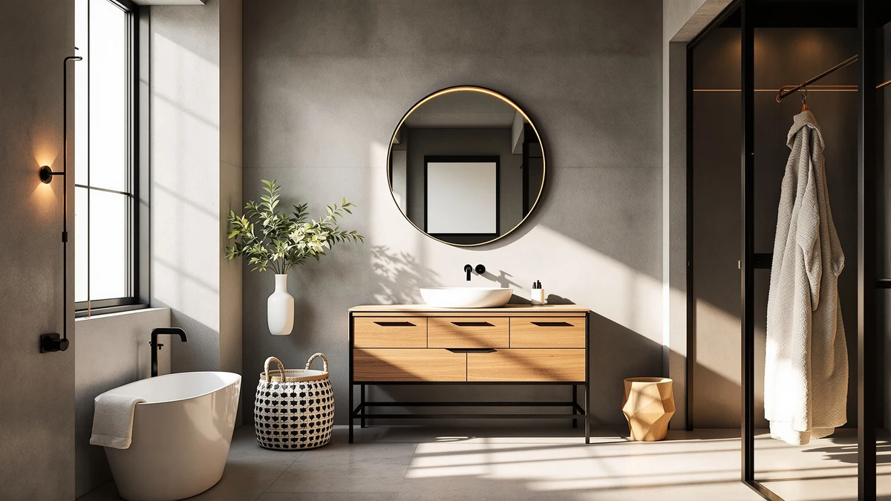

PONLTTEY 60" Bathroom Vanity Review (2026): Worth It?
Prices and picks verified as of October 2026. Independent, reader-supported reviews.


Quick Answer
In this Ponlttey 60" bathroom vanity review, the double-sink unit costs $1,699.99 and pairs an MDF and engineered wood cabinet with two full basins and two faucet sets. It costs roughly $900 more than the smaller alternatives below, but the extra width and second sink justify the gap for a shared primary bathroom.
Our pick: PONLTTEY 60" Bathroom Vanity with, $1,699.99 Check Price on Amazon
Bottom line: our top pick is the PONLTTEY 60" Bathroom Vanity with Sink at $1,699.99.
Things to Know Before You Buy
- Price range: the four vanities covered in this Ponlttey 60" bathroom vanity review span $788.99 to $1,699.99, a gap of about $911.
- Width and sink count drive most of that gap. The Ponlttey's 60 inch cabinet holds two full basins, while the three alternatives are smaller single or double-sink units built for tighter bathrooms.
- Only the SSLine alternative has a public review record: 4 stars across 30 ratings. The Ponlttey, DELUXE LIVING, and Ambrovina listings are too new on Amazon to have a verified track record yet.
- A 60 inch double-sink vanity suits a shared primary bathroom. If only one person uses the sink, the 36 inch DELUXE LIVING below covers the same routine for less money and less floor space.
- Every price below reflects the listing at the time of writing and can shift, so check the current Amazon price before you buy.
This Ponlttey 60" bathroom vanity review looks at the PONLTTEY 60 Inch Bathroom Vanity and lines it up against three smaller, lower-priced alternatives, so you can see exactly what $1,699.99 buys in a double-sink vanity right now. Most shoppers land on this width because two people share the bathroom every morning and a single basin turns into a bottleneck, but a cabinet this size only earns its price if the construction and hardware hold up to daily use from two households worth of routines. A lot of listings at this size look similar in photos and only start to differ once you read the fine print on materials and basin count.
The short version: the PONLTTEY wins on capacity, with two full basins and 60 inches of counter and storage that a smaller vanity simply cannot match. It loses on price and track record, since it costs nearly triple the alternatives here and the listing has no ratings yet. If a lower price and an established rating history matter more to you than a second sink, the SSLine below has 30 verified ratings behind it. We break down all four options, including where each one falls short, in the sections that follow, so you can match the trade-offs to what your bathroom actually needs instead of guessing from a product photo.
Why You Should Trust Us
Ilane Tall covers bathroom fixtures and furniture for Best Bathroom Vanities and put together this Ponlttey 60" bathroom vanity review by comparing manufacturer specs, current Amazon pricing, and verified buyer feedback rather than repeating marketing copy. We do not run a fake testing lab or claim to have installed every vanity we cover. Instead, we cross-check dimensions, materials, and pricing against what owners report after living with these pieces, and we say so plainly when a listing doesn't have enough review data to back a confident recommendation. That distinction matters more in the vanity category than most, since a listing's photos rarely show how a cabinet holds up after a year of daily splashes from two sinks instead of one.
Our Research Experience
This Ponlttey 60" bathroom vanity review doesn't involve physical testing. We compared the PONLTTEY 60 Inch Bathroom Vanity against three lower-priced alternatives using the manufacturer's listed materials, dimensions, and construction details, then checked those claims against verified owner reviews wherever they exist. For the SSLine, that meant reading through its 30 verified ratings to see which complaints came up more than once. For the PONLTTEY, DELUXE LIVING, and Ambrovina, where Amazon hasn't collected enough reviews yet, we relied on the listed features and current pricing alone, and we flag that gap below so you can weigh it accordingly. When a manufacturer's description and the buyer reviews disagree, we note the disagreement instead of picking whichever version sounds better.
Overview & Specs
Here's how the primary pick in this Ponlttey 60" bathroom vanity review breaks down on paper, along with the pros, cons, and pricing details you need before you decide. The specs table below covers material and size at a glance, and the full write-up beneath it goes into the reasoning behind each pro and con.

PONLTTEY 60" Bathroom Vanity with
What we like
- Two full basins mean no more waiting at the sink during a shared morning routine
- 60 inch width delivers substantially more counter and drawer space than the 36 to 48 inch alternatives below
- MDF and engineered wood cabinet is finished for a bathroom's daily humidity rather than for a dry room
Flaws but not dealbreakers
- At $1,699.99 it costs roughly $900 more than the three alternatives covered in this review
- Too new on Amazon to have a public rating or review count, so early buyers are relying on the listing alone
- 60 inches of width needs more wall space than a bathroom built around a single sink
| Material | MDF / engineered wood |
| Size | 60in Double Sink |
The PONLTTEY 60 Inch Bathroom Vanity anchors this Ponlttey 60" bathroom vanity review because it's the only double-sink, 60 inch option in the lineup, and the spec sheet backs up the higher price. The cabinet uses an MDF and engineered wood build sized for two full basins and two faucet sets, so two people can brush their teeth and wash up at the same time without elbowing each other. At $1,699.99 it costs far more than the smaller alternatives here, but that gap buys roughly 12 to 24 extra inches of width and a second sink, not the same box with a higher price tag. For a primary bathroom shared by a couple or a family, that combination is difficult to replicate by buying two separate smaller vanities.
Where the PONLTTEY falls short is track record and price. Amazon shows no rating or review count on this listing yet, so you're evaluating it on specs and construction quality rather than years of owner feedback the way you can with the SSLine below. MDF and engineered wood also means wiping up standing water around both basins promptly, since these cores swell faster than solid wood or plywood when moisture sits on the surface. If your bathroom is narrow or only one person uses the sink, a 60 inch double-sink cabinet is more vanity than you need, and one of the smaller alternatives will fit both your wall and your budget better.
What We Liked
Across this Ponlttey 60" bathroom vanity review, the double-sink layout stands out most: two full basins and two faucet sets rarely show up together under $1,800, and the 60 inch cabinet leaves noticeably more drawer and counter space than the 36 to 48 inch options nearby. The MDF and engineered wood build is finished with bathroom humidity in mind rather than treated as an afterthought, and the extra width means towels, toiletries, and two people's routines no longer have to compete for the same six feet of counter.
What Could Be Better
The biggest gap in this Ponlttey 60" bathroom vanity review is review history. Because the listing is new, you can't lean on dozens of owner comments the way you can with the SSLine's 30 verified ratings, so part of the buying decision rests on trusting the manufacturer's stated materials. MDF and engineered wood construction, even when sealed, also asks for more care around standing water than solid wood, which matters more here since there are two basins instead of one to wipe down. Shoppers who want photographic proof of how the finish ages over a few years won't find that yet, simply because the product hasn't been on the market long enough to generate it.
Who Is It For?
This Ponlttey 60" bathroom vanity fits a shared primary bathroom where two people need their own sink and want real storage instead of a cramped single-basin cabinet. It's a reasonable upgrade if you're renovating a primary bathroom and have the wall space to support 60 inches of cabinet. It's a weaker fit if only one person uses the bathroom, if your space can't spare five feet of wall, or if you'd rather buy a vanity with an established public review history first. Buyers on a tight budget should also weigh whether a smaller double-sink option, like the SSLine below, covers the same shared-sink need for roughly $900 less.
Alternatives to Consider
If the PONLTTEY doesn't fit your bathroom or your budget, these three alternatives from this Ponlttey 60" bathroom vanity review cover different priorities: the lowest entry price of the group, an established rating history, and a floating design for easier floor cleaning. The DELUXE LIVING 36 Inch Bathroom Vanity trades the second sink for a single-user footprint and a price under $800, which suits a smaller bathroom or a secondary bath where only one person needs the counter. The SSLine 48" Bathroom Vanity Double keeps the two-sink layout the PONLTTEY offers but in a narrower 48 inch cabinet, and it's the only alternative here with a public track record. The Ambrovina 48" Floating Bathroom Vanity mounts to the wall instead of sitting on the floor, which opens up cleaning underneath but still gives up 12 inches of width compared with the PONLTTEY.

Editor’s Pick
DELUXE LIVING 36 Inch Bathroom
The lowest price in this lineup at $799.99, with a single-sink layout that suits a smaller bathroom or a secondary bath where two basins would go unused.
$799.99
Check Price on Amazon
Best Value
SSLine 48" Bathroom Vanity Double
The only option here with a public track record, 4 stars across 30 verified reviews, plus a double-sink layout in a narrower 48 inch cabinet for shared bathrooms that can't spare a full 60 inches.
$789.60
Check Price on Amazon
Premium Choice
Ambrovina 48" Floating Bathroom Vanity
A wall-mounted, floating design that opens up floor space for cleaning underneath, at $788.99 for a 48 inch double-sink cabinet.
$788.99
Check Price on AmazonHow much does a 60 inch double-sink bathroom vanity cost?
In this Ponlttey 60" bathroom vanity review, the double-sink unit costs $1,699.99, which is roughly $900 more than the 36 to 48 inch alternatives covered below.
Is MDF or engineered wood durable enough for a 60 inch vanity?
It can be, as long as you wipe up standing water around both basins promptly.
Frequently Asked Questions
How much does a 60 inch double-sink bathroom vanity cost?
In this Ponlttey 60" bathroom vanity review, the double-sink unit costs $1,699.99, which is roughly $900 more than the 36 to 48 inch alternatives covered below. That gap reflects the extra cabinet width, two basins, and two faucet sets rather than a markup on the same footprint. A vanity priced well below $1,000 at this width usually means a single sink or a thinner cabinet, not the same feature set for less.
Is MDF or engineered wood durable enough for a 60 inch vanity?
It can be, as long as you wipe up standing water around both basins promptly. MDF and engineered wood construction, like the Ponlttey cabinet, resists everyday humidity but swells faster than solid wood or plywood if water sits on the surface for hours at a time. A vanity with a properly sealed top and decent bathroom ventilation keeps most of that risk in check.
Should I choose a 60 inch double-sink vanity or a smaller single-sink one?
A 60 inch double-sink vanity makes sense when two people share a bathroom every morning and the room has the wall space for it. If only one person uses the sink, or your bathroom is narrow, a 36 inch single-sink vanity like the DELUXE LIVING alternative below covers the same daily routine for less money and less floor space. Measure your bathroom's width before committing to 60 inches, since it needs considerably more wall space than a 36 or 48 inch cabinet.
Final Verdict
This Ponlttey 60" bathroom vanity review comes down to what you value most: real double-sink capacity or a lower price with an established track record. The PONLTTEY 60 Inch Bathroom Vanity is the pick for shared primary bathrooms, since two full basins and 60 inches of storage rarely show up together in one cabinet at any price. If you'd rather buy from a listing with a proven rating, or you don't need two sinks, the alternatives above cover those cases for roughly $900 less. Whichever option you choose, confirm the current price and stock before ordering, since Amazon listings in this category shift more often than the pages themselves get updated.